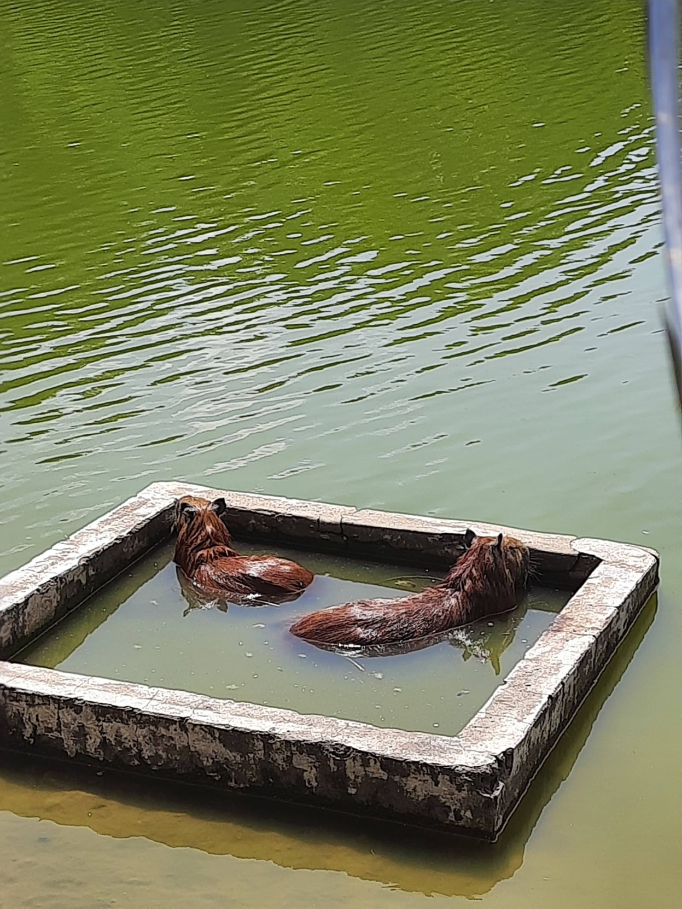
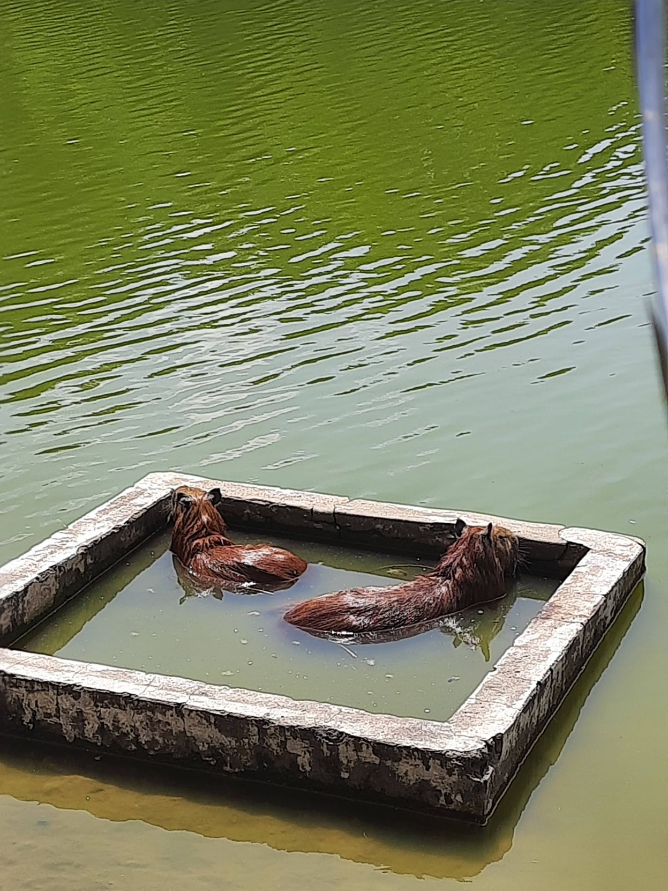

Una experiencia agradable a 1 hora y 30 minutos de Bogota, un ambiente agradable y natural donde se puede apreciar la Laguna del Sisga que es su mayor atractivo turistico, alquilar veleros para pasear durante 1 hora y conectarse más de cerca a la laguna, sin duda la tranquilidad que transmite es de apreciar. La artesanias y cultura del pueblo conservan un bello atractivo antiguo que da la sensacion de seguridad y confiaza.
 

Sin duda uno de los lugares turisticos de cololmbia mas extensos y hermosos, entre ellos se puede apreciar el zoologico de la hacienda napoles con cualquier variedad de animales. Juegos acuaticos con gran variedad y comida exquisita